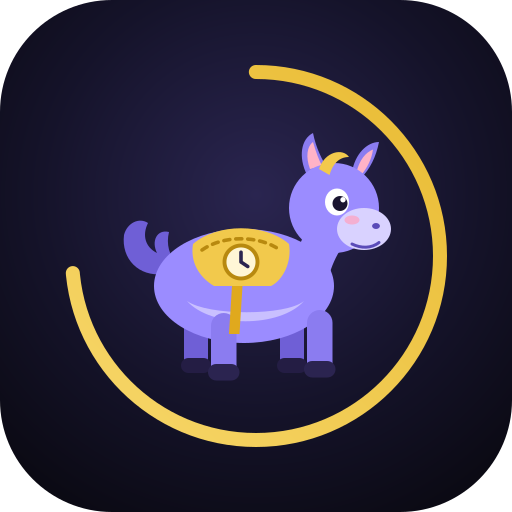

Toujours su quoi faire
Chaque enclos a une carte qui dit son état en clair : « Tout roule », « Recharge conseillée, 23 min gagnées », « Étape finie, lance la suivante ». Un seul bouton, la bonne action.

Monture MinuteDOFUS 3.7 · Android & Windows · gratuit
Dragodindes, muldos ou volkornes : Monture Minute guide chaque enclos étape par étape. Une seule phrase te dit quoi faire maintenant (lancer, recharger, passer à la suite), le carburant est prérempli d’après tes habitudes, et une notification arrive au bon moment, jusqu’à des montures fécondables au niveau voulu.
Dernière version : chargement…
✓ Tout roule, rien à faire
1 h 12
Fin de l’étape à 18:45
Maturitévitesse ×30
164 200 / 200 000
Ralentit à ×20 dans 54 min
Amourvitesse ×40
191 500 / 200 000
Objectif atteint dans 1 h 12, à 18:45
Chaque enclos a une carte qui dit son état en clair : « Tout roule », « Recharge conseillée, 23 min gagnées », « Étape finie, lance la suivante ». Un seul bouton, la bonne action.
Un assistant en trois écrans (monture, sérénité, niveaux) calcule l’ordre optimal des étapes et leur durée avant même de commencer.
Jauges de 200 000, vitesse ×40 à ×10 selon l’Élixir, la Potion, le Philtre ou l’Extrait : chaque jauge descend en direct, et l’app ne conseille une recharge que si elle fait vraiment gagner du temps.
L’app retient ce que tu fais de chaque jauge (laissée telle quelle ou remplie) et prépare l’étape suivante : « Jauges activées » valide et relance d’un coup.
Changement de palier, jauge vide, étape terminée : tu es prévenu, même l’app fermée sur Android et en arrière-plan sur Windows.
Une fenêtre de 400 px qui tient à côté du jeu (« toujours au premier plan » sur Windows), des onglets Enclos, Alertes et Réglages, une visite guidée et des « ? » pour chaque notion.
À chaque démarrage, l’app vérifie sur GitHub s’il existe une nouvelle version, la télécharge, la vérifie et l’installe toute seule, sur Windows comme sur Android. Tes données sont conservées.
Pas de compte, pas de serveur : ton élevage reste sur ton appareil. Le code est ouvert sur GitHub.
Chargement des versions depuis GitHub…